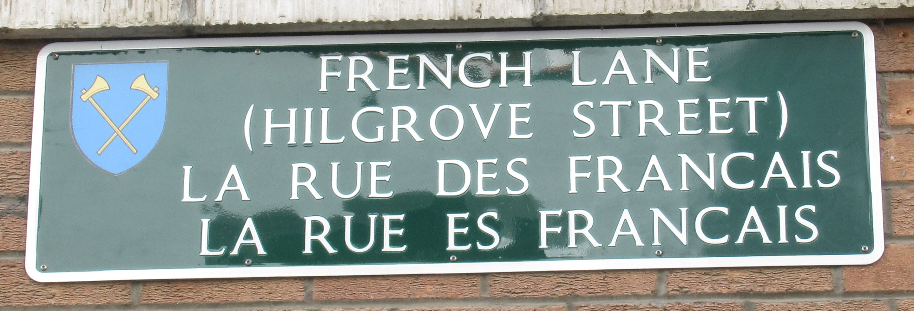

Ottawa, Ontario,
Cannada.
Lé 10 d'mai 1975
Moussieu l'Rédacteu,

Dans la gâzette du 27 mar, tchi veint d'arriver, Moussieu Chris Bright pâle dé la destruction dé "French Lane". Est-ch' "Hilgrove Street"? J'n'ai janmais connu chutte rue-là comme "French Lane", mais j'l'ai connue comme "La Rue ès Français" et v'là tchi m'fait penser qu' ch'est p't-êt' lyi tchi s'en va êt' dêtruite au nom du progrès tch'est à vilanner l'appathence dé nouot' belle pétite ville d'aut'fais. Dans man janne temps oulle avait un air paisibl'ye, trantchilisant et mème mystéthieux quand v'nait la r'vèrdie à la fîn d'arlévée et qu'les faillies lampes des rues d'chu temps-là donnaient eune chance ès veues dé d'dans les boutiques d'ajouôter l'bénéfice dé lus lueu ès objets dans les f'nêtres. Et la réflection des rouoges ou bliues ou vèrtes veues l'travèrs du litchide dans les grand' boutelles ventrues, dans les f'nêtres des apotiqu'sies, 'tait fascinnante. Ouaithe qué La Rue d'Driéthe n'avait pon 'couo justément tant d'attrait comme la rue d'la p'tite ville du Mont St. Miché en Nouormandie, ou lî r'semblait un mio auve ses p'tites boutiques. À ch't heu, ch'est des grand' babaines dé carrées boutiques tchi sont d'architectuthe "functional" comme i' disent en Améthique, mais tchi n'ont, à m'n idée, autcheune bieauté.
Mais, pour èrvénin à La Rue ès Français, j'mé d'mande comment qu'ou peut dispathaître. Est-ch' qué les boutiques tch'ont lus d'vantuthes dans la Rue du Milieu vont s'agrandi en bâtissant en driéthe par dessus chein tch'est la rue à ch't heu ? Et tch'est tchi s'en va dév'nin des boutiques tch'ont eune d'vantuthe dans La Rue ès Français à ch't heu ? Et l'entrée du Marchi tch'est là ? S'en va-t-elle dév'nîn un tchu-d'sa ? Ma fîngre, j'n'comprends rein.
Mais j'm'èrsouveindrai tréjous d'La Rue ès Français. Jé n'sai pon si la bouannefemme Madanme Cousinnard tch'allait par les campagnes dans san quèrre faithe ses acats, avait eune boutique là, mais jé n'peux pon penser à la rue qu'ou m'veinge dans l'idée. Dans la saison la rue 'tait plieine dé Brétons quand v'nait l'Dînmanche, dans chu temps-là en chabots. Et y'avait les prêcheux d'la Mission Brétonne tchi v'nait lus prêchi l'Êvangile à l'entrée d'la rue, et j'tais surprîns d'en vaie autant à l's êcouter, car ch'est seux tch'il' 'taient Catholiques-Romains.
J'vai dans la gâzette qué j'avons un nouvieau Avocat. Quand j'etais janne clèrcot dans La Rue ès Trais Pigeons, y'avait pus d'pigeons qu'd'Avocats par les c'mins, et pus d'Êcrivains qu'd'Avocats. À ch't heu ch'est l's Avocats tch'en gângnent. I' m'sembl'ye qué si L's Etats ordonnent la réduction du nombre d'pigeons dans l'Vièr Marchi, et qué l'nombre d'Avocats continnue à grandi, y'étha bétôt pus d'Avocats qué d'pigeons!
Quand j'tais en Jèrri l'année pâssée, un campangnard mé dîsait: "Faut-i' tch'i' y'aie des sou à faithe dans l'mêtchi d'Avocat pour qué tant d'gens aient l'ambition d'lus y mettre! Peuvent-i' fonctionner et êcrithe des contrats pour pâsser d'vant Moussieu l'Bailli et les Juges comme les Êcrivains?"
"Oui dgia," j'li dis.
"Ch'est ravissant qué l's Êcrivains n'lus r'bînfrent pon contre la louai tchi pèrmet à un tas d'jannes gas d'adopter un mêtchi, si aisîement, tchi lus pèrmet d'faithe lé mème travas comme ieux sans aver ieu à pâsser sept ans dans l'office d'un aut' Êcrivain sans gângni rein sénon un p'tit présent à Noué, et apprendre les louais d'Jèrri à fond," i' m'dit.
"Les temps ont changi dépis que j'tions mousses," j'lî dis. "Les clèrcots d'Êcrivains n'travâllent pon sept ans pour rein à ch't heu. Et y'a autant d'filles dans deux-s'trais offices comme y'avait d'garçons dans toute la rue d' "Hill Street" comme clèrcots l'temps pâssé, et les filles gângnent quâsi autant par mais comme les garçons gângnaient par an quand i' c'menchaient à êt' payis!"
"Eh bein," i' m'dit, "j'avons p't-êt' 'té des pouorres achocres d'négrer nouos vies à travailli dans les clios à la pliaiche dé nouos enrichi dans La Rue ès Trais Pigeons. Et acouo, jé n'sai pon. Un vièr diton nouos dit qué : 'Pauvre honnête vaut mus qu'riche voleux'!"
"Mais," j'lî dis, "un Avocat n'est pon un voleux!"
"P't-êt' bein," i' m'dit, "mais penses ès bouans vièrs ditons à lus ègard : D'Êcrivains et Avocats, l'Dgiâbl'ye fait un grand amas!' Et un aut' nouos dit : 'Auve les Méthodistes et l's Avocats, lé Dgiabl'ye n'a autchun embarras ' "
"N'té fie pon trop sus les vièrs ditons," j'lî dis, "car nouos anchêtres avaient un fanmeux sens d'humour, et il' en înventaient pour touos les cas dans la vie. Par exempl'ye iun nouos dit tch'i' n'y a pon d'sots mêtchièrs, et un aut' nouos dit qué l'Dgiâbl'ye et l'monde sont couôsîns gèrmains! V'là tchi nouos met du mème rang qué l's Avocats vis-à-vis d'li! Et quant ès Méthodistes, i' faut avouer tch'i' sont aussi bouans comme nous, si pon miyeurs, et ch'est pour ch'là que l'Dgiâbl'ye n'a pon d'embarras auve ieux, car il en a peux!"
George d'La Forge
Viyiz étout: